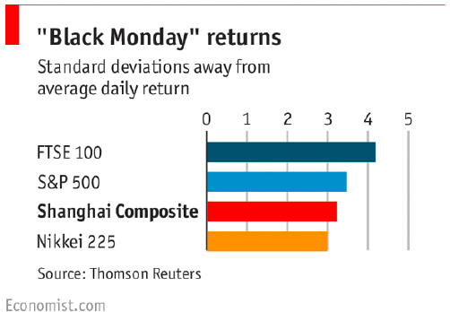
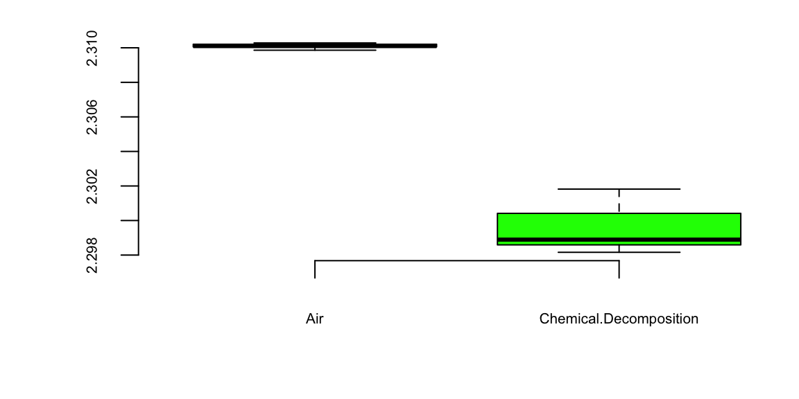
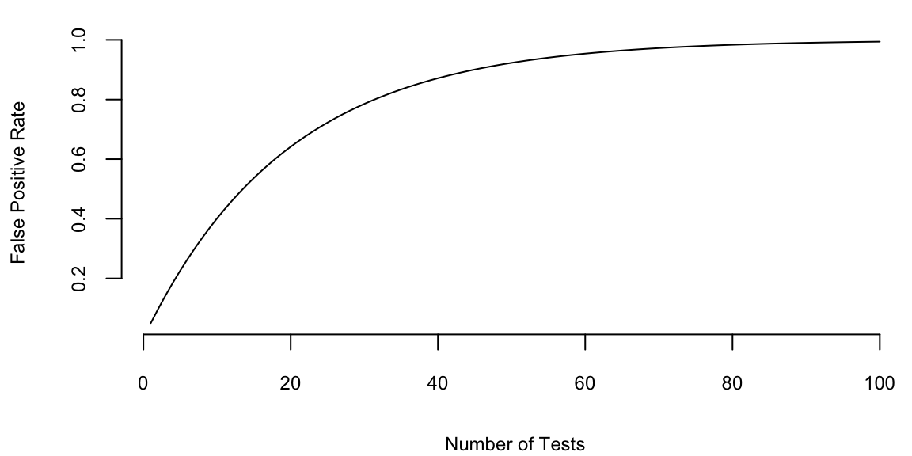

set.seed(17) # Kharlamov
allcoins = runif(1000000, 4.95, 5.05)6 AB Testing
The Internet age opened the door to enamours data collection from images to videos as well as personalized information. The data collected are observational rather than ones collected from a designed experiment - where hopefully we can control the environment in order to find the effects of intervening in the situation.
Any competitive business always strives to improve its efficiency. Requirements to improve can be driven by changing market conditions, customer behavior and their demands. We would like to test our ideas on how to improve things and to pick the best course of action. AB testing provides a statistical framework for addressing such issues. It is the underpinning for testing new ideas and measuring the effects of strategy A versus B. It is widely used for testing marketing complains, product designs or even effects of new drugs. It relies on a statistical procedure sometimes known as hypothesis testing, hence AB testing allows us to draw conclusions from controlled designed experiments. We would also like to use these methods on observational study and thus brings up questions of causation. Instrumental variables provide ways of trying to tease out main effects. Propensity scores and matching are also popular techniques. We often interested in a question whether the observed effect is there due to noise or a true one. We can use hypothesis testing to answer this question in a rigorous way. Think, of coin tossing experiment. If you tossed coin twice and it came heads both of the times, does it mean that the coin is biased? Common sense tells us that two tosses is not enough to make a definitive conclusion and we should toss this coin a few more times to gain confidence. Hypothesis, testing is just that, the procedure that tells us if we have enough evidence to make a conclusion or more data is required to collect. It uses probability distributions to quantify uncertainty about a experiment outcomes. Let’s do a more practical example.
There is a whole field on bandit problems - how to optimally sequential allocate our resources as a trade-off between exploitation (gain more information in an environment you understand to solely gain efficiency) or exploration (to learn about new environments which might be less optimal than the current one).
You work as a quant for a trading firm and you have developed a new algorithm to trade stocks. You tested you algorithm on the historical data and it outperformed the state of the art algorithm used in your company. Now, the important question is whether your trading strategy can truly outperform the market or it is just got lucky. We need to analyze the performance of the algorithm after it was created and need to decide whether we have truly discovered a dominant strategy. Sequential analysis - a natural framework for Bayesian methods - allows us to decide on how long we need to wait before we have enough evidence that our algorithm has an edge.
The effect we try to measure is usually present in some statistics that we calculate from data, for example sample mean, proportion, or difference in means.
Example 6.1 (Pyx Trial) The “Pyx Trial” refers to an ancient ceremony held in the United Kingdom’s Royal Mint. This tradition, dating back to the 12th century, is a method of testing the quality of minted coins to ensure it meets the standards of weight and purity set by law. The term “Pyx” comes from the Greek word “pyxis,” meaning a small box, which is used to hold the sample coins that are to be tested.
Sir Isaac Newton became Warden of the Mint in 1696 and later the Master of the Mint. His role was crucial in reforming the coinage and improving its quality. Newton was rigorous in enforcing standards and combating counterfeiting and clipping (the practice of shaving off small amounts of precious metal from coins). Newton applied his scientific mind to the problems of minting, including refining assays (the testing of the purity of metals), improving the design of coins to prevent clipping, and introducing milled edges on coins.
The trial starts by selecting \(n\) coins from each batch produced by the Royal Mint. These coins are placed in a box called the Pyx. The number of coins used in the Trial of the Pyx can vary each year. This number depends on several factors, including the variety and quantity of coins produced by the Royal Mint in that particular year. Typically, a representative sample of each type of coin minted is selected for testing. Then, for each coin attribute (weight, size, composition), the mean (average) value of the sample is calculated as well as the variance of the mean.
Suppose we have minted one million of coins and collected the sample of \(n=100\) coins, the legal weight tolerance for a certain coin is 0.05 grams.
We will use the simulated data for our analysis. Let’s simulate the weights of all of the coins produced
Now, we survey 2500 randomly selected coins
survey_sample = sample(allcoins,size = 100, replace = F)
xbar = mean(survey_sample)The sample mean of 5 is very close to the true mean of 5. However, if we are to collect a different sample, the sample mean will be slightly different
survey_sample = sample(allcoins,size = 100, replace = F)
xbar = mean(survey_sample)Now, we simulate 1000 surveys and calculate the sample mean for each survey.
prep = replicate(2000, mean(sample(allcoins,size = 100,replace = F)))
hist(prep, breaks = 30, freq = F, main="Histogram of voting proportions")
p = seq(4.9,5.1,length.out = 500)
lines(p, dnorm(p,mean(prep),sd(prep)), col="red",lwd=3)
We see that the red bell-curve (normal density) is a good model for the distribution over the means calculated from samples. In fact, the central limit theorem says that sample proportions do follow normal distribution. We need to estimate the mean and standard deviation of this bell curve. It is natural to use the sample mean as the estimate of the mean of the bell curve.
mean(prep) 5The mean \[ \bar x = \frac{1}{n}\sum_{i=1}^{n} x_i \] is close to the true population mean of 5. We sometimes use the notation \(\hat \mu\) to denote an estimate. So we have \(\hat \mu = \bar x\).
However, the standard deviation is much lower compared to the standard deviation of the population
sd(prep) 0.0028sd(allcoins) 0.029The variance of the mean measures how much the sample mean is expected to vary from one sample to another, if you were to take multiple samples from the same population.
Assuming that samples are uncorrelated (correct sampling procedure is important!), the variance of the mean is given by \[ Var(\bar x) = Var\left(\frac{1}{n} \sum_{i=1}^{n} x_i\right) = \frac{1}{n^2} \sum_{i=1}^{n} Var(x_i) = \frac{\sigma^2}{n}. \]
Therefore, the variance of the mean formula is \[ Var(\bar x) = \frac{\sigma^2}{n}. \] If we know the the population variance \(Var(x_i) = \sigma^2\), then we can calculate the variance of the mean. However, in practice, we do not know the population variance. Instead, we estimate it using the sample variance \(s^2\). The estimated variance of the mean is then \[ Var(\bar x) = \frac{s^2}{n}. \] The standard deviation of the mean is called the standard error and is given by \[ SE(\bar x) = \sqrt{Var(\bar x)} = \frac{s}{\sqrt{n}}. \]
Let’s compare the standard error of the mean and standard deviation calculated from the simulations
sd(prep) 0.0028sd(allcoins)/sqrt(100) 0.0029They are very close!
This statistical property allows us to quantify uncertainty about the sample mean and say something about the true value of the mean \(\mu\), in terms of a probabilistic interval statement.
Central Limit Theorem
CLT states that, given a sufficiently large sample size, the distribution of the sample means will be approximately normally distributed, regardless of the shape of the population distribution. This normal distribution is also known as the Gaussian distribution. The theorem applies to a wide range of population distributions, including distributions that are not normal. This universality makes it one of the most powerful and widely-used theorems in statistics.
The first and simplest case of the CLT was published in 1738 by the De Moivre and is called the De Moivre–Laplace theorem. According to this theorem the standard normal distribution arises as the limit of scaled and centered Binomial distributions, in the following sense. Let \(x_1,\ldots,x_n\) be independent, identically distributed Rademacher random variables, that is, independent random variables with distribution \[ P(x_i = 1) = P(x_i = -1) = \frac{1}{2}. \] Then, the distribution of the sum of these random variables converges to the standard normal distribution as \(n\) tends to infinity. That is, for any \(a<b\), we have \[ \lim_{n\to\infty} P\left(a \le \frac{x_1+\cdots+x_n}{\sqrt{n}} \le b\right) = \int_a^b \frac{1}{\sqrt{2\pi}} e^{-x^2/2} dx. \] In this case, the sum \(x_1+\cdots+x_n\) has mean \(n\mu\) and variance \(n\sigma^2\), so that the standardized sum \((x_1+\cdots+x_n - n\mu)/\sqrt{n\sigma^2}\) has mean \(0\) and variance \(1\). The theorem then states that the distribution of this standardized sum converges to the standard normal distribution as \(n\) tends to infinity.
In 1889 Francis Galton published a paper where he described what we now call the Galton Board. The Galton Board is a vertical board with interleaved rows of pins. Balls are dropped from the top, and bounce left and right as they hit the pins. Eventually, they are collected into one of several bins at the bottom. The distribution of balls in the bins approximates the normal distribution. Each pin is a physical realization of the binomial draw and each row is a summand. The location at the bottom is a sum of the binomial draws. The galton-ball.r script simulates the Galton board experiment. The script is available in the R folder of the book repository. Figure 6.1 shows the result of the simulation. The distribution of the balls in the bins approximates the normal distribution.
Example 6.2 Electronic Arts is a company that makes video games. SimCity 5, one of EA’s most popular video games, sold 1.1 million copies in the first two weeks of its launch last year. 50% of sales were digital downloads, thanks to a strong A/B testing strategy.
As EA prepared to release the new version of SimCity, they released a promotional offer to drive more game pre-orders. The offer was displayed as a banner across the top of the pre-order page – front-and-center for shoppers. But according to the team, the promotion was not driving the increase in pre-orders they had expected.
They decided to test some other options to see what design or layout would drive more revenue.
One variation removed the promotional offer from the page altogether. The test lead to some very surprising results: The variation with no offer messaging whatsoever drove 43.4% more purchases. Turns out people really just wanted to buy the game – no extra incentive necessary.
Most people believe that direct promotions drive purchases, but for EA, this turned out to be totally false. Testing gave them the information needed to maximize revenue in a way that would not have been otherwise possible.
We use R: abtest to examine whether a black or pink background results in more purchases. Run experiment for one week:
Pink background: \(40\)% purchase rate with \(500\) visitors
Black background: \(30\)% purchase rate with \(550\) visitors
Let’s run the AB test to see which is more effective, we will calculate the confidence intervals for conversion rates for each variation of site.
The abtestfuncfunction below calculates CIs (80% significance, \(Z=1.28\)).
site1 = c(.40, 500) # pink
site2 = c(.30, 550) # black
abtestfunc <- function(ad1, ad2){
sterror1 = sqrt( ad1[1] * (1-ad1[1]) / ad1[2] )
sterror2 = sqrt( ad2[1] * (1-ad2[1]) / ad2[2] )
minmax1 = c((ad1[1] - 1.28*sterror1) * 100, (ad1[1] + 1.28*sterror1) * 100)
minmax2 = c((ad2[1] - 1.28*sterror2) * 100, (ad2[1] + 1.28*sterror2) * 100)
print( round(minmax1,2) )
print( round(minmax2,2) )
}
abtestfunc(site1, site2) 37 43
28 32Purchase rate for the pink background is significantly higher!
\(Z\)-Score
Example 6.3 (Stock market crash 1987) Prior to the October, 1987 crash SP500 monthly returns were 1.2% with a risk/volatility of 4.3%. The question is how extreme was the 1987 crash of \(-21.76\)%? \[ X \sim N \left(1.2, 4.3^2 \right ) \] This probability distribution can be standardized to yield \[ Z =\frac{X-\mu}{\sigma} = \frac{X - 1.2}{4.3} \sim N(0,1) . \] Now,, we calculate the observed \(Z\), given the outcome of the crash event \[ Z = \frac{-0.2176 - 0.012}{0.043} = -5.27 \] That’s is \(5\)-sigma event in terms of the distribution of \(X\). Meaning that -0.2176 is 5 standard diviations away from the mean. Under a normal model that is equivalent to \(P(X < -0.2176)\) = 4.66^{-8}.
On August 24th, 2015, Chinese equities ended down $- 8.5 $% (Black Monday). In the last \(25\) years, average is $0.09 $% with a volatility of $2.6 $%, and \(56\)% time close within one standard deviation. SP500, average is \(0.03\)% with a volatility of \(1.1\)%. \(74\)% time close within one standard deviation

6.1 Confidence Intervals
The fact that the distribution of the simulated means from the Pyx example can be described well by a normal bell curve, in fact has a theoretical justification. It is called the Central Limit Theorem. The Central Limit Theorem states that, given a sufficiently large sample size, the distribution of the sample means will be approximately normally distributed, regardless of the shape of the population distribution. This normal distribution is also known as the Gaussian distribution.
There are a few conditions. The sampled observations must be independent. In practice, this means that the sampling should be random, and one observation should not influence another.Further, the sample size should be sufficiently large. While there is no strict rule for what constitutes ‘large enough,’ a common guideline is a sample size of 30 or more. However, if the population distribution is far from normal, a larger sample size may be required.
We can estimate the mean of this bell curve using \(\bar x\) and the standard deviation (standard error) using \(s/\sqrt{n}\).
The square-root nature of this relation is somewhat unfortunate. To double your certainty about the population mean, you need to quadruple the sample size.
One of the main applications of this results is the construction of confidence intervals. A confidence interval is a range of values that is likely to contain the true value of the population mean. It is a plausible range for the quantity we are trying to estimate. The confidence interval is calculated using the sample mean \(\bar x\) and the standard error \(s/\sqrt{n}\). The confidence interval is centered around the sample mean and has a width of \(2 \times SE(\bar x)\). The confidence interval is calculated as follows \[ \bar x \pm 2 \times SE(\bar x) = \bar x \pm 2 \times \frac{s}{\sqrt{n}}. \]
The theorem applies to a wide range of population distributions, including distributions that are not normal. This universality makes it one of the most powerful and widely-used theorems in statistics.
Here are a few conclusions we can make thus far 1. Mean estimates are based on random samples and therefore random (uncertain) themselves
We need to account for this uncertainty!
Standard Error measures the uncertainty of an estimate
Using properties of the Normal distribution, we can construct \(95\)% Confidence Intervals
This provides us with a plausible range for the quantity we are trying to estimate.
Coming back to the Patriots coin toss example, we know that they won 19 out of 25 tosses during the 2014-2015 season. In this example, our observations are values 0 (lost toss) and 1 (won toss) and the average over those 0-1 observations is called the proportion and is denoted by \(\hat p\) instead of \(\bar x\). When we deal with proportions, we can calculate the sample variance from its mean \(\hat p\) as follows \[ s^2_{\hat p} = \frac{\hat p(1-\hat p)}{n}. \] Thus, we know that given our observations and CLT, the true vale of the probability of winning a toss is normally distributed. Our best guess at the mean \(\hat p\) is \(19/25 = 0.76\) and variance \(s^2 = 0.76(1-0.76)/25 = 0.091\) \[ \hat p \sim N(0.76, 0.091). \] Then a \(95\%\) Confidence Interval is calculated by
0.76 + c(-1.96,1.96)*0.091 0.58 0.94Since 0.5 is outside the confidence interval, we say that we do not have enough evidence to say that the coin tosses were fair.
Example 6.4 (Mythbusters) In 2006 the creators of Mythbusters TV show on Discovery channel wanted to test weather yawning is contagious in humans. They have recruited 50 participants and each of those went through an interview. At the end of 34 randomly selected interviews the interviewer did yawn. Then participants were asked to wait in a next door room. Out of 34 participants form the experimental group, 10 did yawn (29.4%) and only 4 out 16 (25%) in the control group did yawn. The difference in the proportion of those who did yawn was 4.4%. The show hosts Kari Byron, Tory Belleci and Scottie Chapman concluded that yawn is indeed contagious.
The question is what happens if we are to re-run this experiment several times with different groups of participants, will wee see the same difference of 4.4%? The fact is that from one experiment to another calculated proportions of yawners in both groups will be different.
In our example, the proportion of yawners in the experiment group is \(\hat p_e = 0.294\) and in the control group is \(\hat p_c = 0.25\). Thus, \[ \hat \sigma^2_e = 0.294(1-0.294) = 0.21,~~~\hat \sigma^2_c = 0.25(1-0.25) = 0.19 \]
We can apply CLT and calculate the uncertainty about \(\hat p_{e}\) and \(\hat p_{c}\) \[ \hat p_e\sim N(0.294, 0.21/34),~~~ \hat p_c\sim N(0.25, 0.19/34). \] Now, instead of comparing proportions (numbers), we can compare their distributions and thus quantify uncertainties. If we plot density functions of those two Normal variables, we can see that although means are different, there is a large overlap of the two density functions.
p = seq(0.0,0.6, length.out = 200)
plot(p,dnorm(p,0.25, sqrt(0.19/34)), col=2, type='l', lwd=3, ylab="Density")
lines(p,dnorm(p,0.294, sqrt(0.21/34)), col=3, lwd=3)
legend("topright", c("control", "experiment"), col=c(3,2), lwd=3, bty='n')The amount of overlap is the measure of how certain we are that \(p_e\) and \(p_c\) are different. Large overlap means we are not very certain if proportions are truly different. For example, both \(p_e\) and \(p_c\) have a high probability of being between 0.2 and 0.4. We can use properties of normal distribution to say specifically what is the amount of this overlap by calculating the corresponding 95% confidence interval of the difference between the proportions. Know that difference of two Normal random variables is another Normal \[ \hat p_e - \hat p_c \sim N(0.294 - 0.25, 0.208/34 + 0.185/16) = N(0.044, 0.0177) \] Now we can calculate 95% confidence interval for \(\hat p_e - \hat p_c\), again using properties of Normal
0.044 + c(-1.96,1.96)*sqrt(0.0177) -0.22 0.30The interval is wide and most importantly, it does contain 0. Thus, we cannot say for sure that the proportions are different. They might just appear to be different due to a chance (sampling error). Meaning, that if we are to re-run the experiment we should expect the difference to be anywhere between -0.22 and 0.31 in 95% if of the cases.
Thus, statistical analysis does not confirm the conclusion made by the show hosts and indicates that there no evidence that the proportion of yawners is difference between the control and experiment groups.
Example 6.5 (Search algorithm) Let’s look at another example and test effectiveness of Google’s new search algorithm. We measure effectiveness by the number of users who clicked on one of the search results. As users send the search requests, they will be randomly processed with Algo 1 or Algo 2. We wait until 2500 search requests were processed by each of the algorithms and calculate the following table based on how often people clicked through
| Algo1 | Algo2 | |
|---|---|---|
| success | 1755 | 1818 |
| failure | 745 | 682 |
| total | 2500 | 2500 |
The probability of success is estimated to be \(\hat{p}_1 = 0.702\) for the current algorithm and \(\hat{p}_2 = 0.727\) for the new algorithm. We can calculate the 95% confidence interval or 95% Bayesian credible region for both estimated proportions Is the new algorithm
For Algo 1:
p1 = 0.702; p2 = 0.727
p1 + c(-1.96,1.96)*sqrt(p1*(1-p1)/2500) 0.68 0.72p2 + c(-1.96,1.96)*sqrt(p2*(1-p2)/2500) 0.71 0.74Given that the intervals do not overlap, there is enough evidence that algorithms are different, and the new Algo 1 is indeed more efficient.
We will get a slightly more precise estimation of uncertainty if we calculate confidence interval for the difference of the proportions. Since \(p_1\) and \(p_2\) both follow Normal distribution, thus their difference is also normally distributed \[ p_1 - p_2 \sim N(\hat p_1 - \hat p_2, s_1^2/n + s_2^2/n). \] Applying this formula for the Google search algorithm experiment, we calculate the 95% confidence interval for the difference
p1 - p2 + c(-1.96,1.96)*sqrt(p1*(1-p1)/2500 + p2*(1-p2)/2500) -5.0e-02 2.9e-05The confidence interval for the difference does contain 0, and thus we cannot say that we are confident that algorithms are different!
More generally, if the number of observations in two groups are different, say \(n_1\) and \(n_2\) then the \[ s_{ \bar{X}_1 - \bar{X}_2 } = \sqrt{ \frac{ s^2_{ \bar{X}_1 }}{n_1} + \frac{ s^2_{ \bar{X}_2 }}{n_2} } \] or for proportions, we compute \[ s_{ \hat{p}_1 - \hat{p}_2 } = \sqrt{ \frac{ \hat{p}_1 (1- \hat{p}_1)}{n_1} + \frac{ \hat{p}_2 (1- \hat{p}_2)}{n_2} }. \]
Then we formulate a hypothesis that we are to test. Our status-quo assumption (there is no effect) is called the null hypothesis and is typically denoted by \(H_0\).
To translate the question from this experiment into language of hypothesis testing, we say that our null hypothesis is that proportion of yawning participants in control (\(\hat p_c\)) and experimental group (\(\hat p_e\)) is the same \(H_0: \hat p_c - \hat p_e = 0\), and the alternative hypothesis is \(H_a: \hat p_c > \hat p_e\). The goal is to use the data tell us if the hypothesis is correct or not.
A key statistical fact behind the hypothesis testing is the Central Limit Theorem. It states that if we have a sample \(\{x_1,\ldots,x_n\}\) with \(n\) observations from any distribution \(x_i \sim p(x)\), then average of the sample follows a Normal distribution with mean \(\mu\) and variance \(\sigma^2/n\) \[ \bar X = \frac{1}{n}\sum_{i=1}^{n}X_i \sim N(\mu, \sigma^2/n) \]
Let’s us a simple simulated data set to demonstrate the central limit theorem. We generate 100 outcomes of a Bernoulli trial with \(p=0.3\) and calculate the mean of this sample \(\hat p\). We repeat it 2000 times and compare the empirical distribution of \(\hat p\) with \(N(0.3, 0.046)\).
set.seed(1)
a = replicate(2000,mean(rbinom(100,1,0.3)))
plot(density(a), main="")
se = sqrt(0.3*(1-0.3)/100) # 0.046
x = seq(0,0.5,length.out = 300)
lines(x,dnorm(x,mean = 0.3,sd = se), col="red", lwd=3)
There are three ways to quantify uncertainty in hypothesis testing. The first approach relies on calculating confidence intervals, as we did for the yawn example. There are two complimentary approaches. One is to calculate what is called a \(p\)-value, that is the probability of getting the result observed in the data, assuming null-hypothesis is true. If \(p\)-value is low, then we reject the null-hypothesis. For the yawn example, the conditional probability that the observed difference in proportions is greater then 0.044, given null hypothesis is true is given by
\[
p-\mathrm{value} = P(\hat p_e - \hat p_c \ge 0.044 \mid H_0),
\] which can be calculated using pnorm function
1 - pnorm(0.044,0,sqrt(0.017)) 0.37The \(p\)-value of 0.37 means that there is 37% chance to observe the difference to be greater then 0.044 assuming the null-hypothesis. It is quite high! We want the \(p\)-value to be low, only then we can claim that we have discovered a new fact, i.e. that yawning is contentious. In many applications we require this number to be at most 0.005. The smallest acceptable \(p\)-value is called the significance level and is typically denoted as \(\alpha\). We can test the hypothesis at different levels of significance \(\alpha\). Further we assume that the statistic we are analyzing follows the sampling distribution. The probability distribution of the statistics values is either Normal, or \(t\)-distribution for continuous variable.
In a nutshell a hypothesis is a statement about a population developed for the purpose of testing with data.To summarize the process of testing a significance of our discovery for proportions, we perform the hypothesis testing following the 5-step process.
- Step 1: Formulate the Null Hypothesis (\(H_0\)), which we assume to be true unless there is sufficient evidence to the contrary. Then, alternative Hypothesis (\(H_1\)): test against the null, e.g. \(H_0: p_e - p_c = 0\), and \(H_a: p_e - p_c > 0\). If there is evidence that \(H_0\) is false, we accept \(H_1\).
- Step 2:Select the significance level \(\alpha\). While \(\alpha = 0.05\) (the 5% level) is the most commonly used., \(\alpha = 0.01\) (the 1% level) is prevalent in medical and quality assurance examples.
- Step 3: Compute the Test Statistic (\(Z\) or \(T\))
- Step 4: Formulate the Decision Rule. For example, reject the Null hypothesis if \(|Z| > 1.96\)
- Step 5: Make a Decision, Compute the p-value. p-value is the smallest significance level at which a null hypothesis can be rejected. If \(p\)-value \(<\alpha\), we have evidence that \(H_1\) is is true, we accept \(H_1\) and claim we have a discovery. If \(p\)-value is \(\ge \alpha\), then we cannot reject the null-hypothesis.
In Steps 1-2 we formulate the hypothesis. In steps 3-5 we make a decision.
In the context of hypothesis testing, we come back to the type I and type II errors we already discussed. They can be used to describe two types of errors you can make when testing
Type I Error: Rejecting a true \(H_0\).
Type II Error: Not rejecting a false \(H_0\).
And the significance level is then \[ Pr(\mbox{reject } H_0 \mid H_0 \; \mbox{ true}) = P(\mbox{type I error}). \]
Hypothesis testing is often used in scientific reporting. For example, the discovery of Higgs Boson was announced as a result of hypothesis testing. Scientists used the five-sigma concept to test the Higgs-Boson hypothesis. This concept, however, is somewhat counter-intuitive. It has to do with a . That is not the probability that the Higgs boson doesn’t exist. It is, rather, the inverse: If the particle doesn’t exist, one in 3.5 million is the chance an experiment just like the one announced would nevertheless come up with a result appearing to confirm it does exist. In other words, one in 3.5 million is the likelihood of finding a false positive a fluke produced by random statistical fluctuation that seems as definitive as the findings released by two teams of researchers at the CERN laboratory in Geneva. So we can talk about the significance level as \(p\)-value to be one-in-3.5-million andt hen the \(Z\)-score is five.
The test statistic (\(T\) or \(Z\)) to quantifies uncertainty between the null-hypothesis value and the observed one is equal the number many standard deviations they are apart from each other. This value is called the \(Z\)-score, and is calculated as \[ Z = \frac{ \bar{x} - \mu_0 }{\sqrt{\Var{\bar x}} }, \] where \(\mu_0\) is the mean assumed under null-hypothesis. The square root of the statistic’s variance \(\sqrt{\Var{\bar x}}\) is called standard error and is denoted by \(se(\bar x)\).
Let’s calculate the \(Z\)- score for the yawning example. When we plug-in \(\mu_0 = 0\), \(\bar{x} = \hat p_e - \hat p_c = 0.044\), \(\Var{\bar x} =\Var{\hat p_e - \hat p_c} = 0.0177\), we get \(Z\) statistic to be 0.33. Thus, our observed difference is very close to 0.
To summarize the duality of confidence interval, \(p\)-value and \(Z\)-score, the following statements are equivalent
- 0 is inside the 95% confidence interval
- \(p\)-value is greater then 0.05
- \(Z\)-statistic is less then 1.96
Let us proceed with another example.
Example 6.6 (Coke vs Pepsi) The most famous hypothesis test in history in whether people can decide the difference between Coke and Pepsi. We run a double blind experiment, neither the experimenter or subject know the allocation. Pepsi claimed that more than half of Diet Coke drinkers said they preferred to drink Diet Pepsi. That is our null hypothesis. The data comes from a random sample of \(100\) drinkers. We find that \(56\) favor Pepsi.
This is a hypothesis test about the proportion of drinkers who prefer Pepsi \[H_0 : p = \frac{1}{2} \; \; \mathrm{ and} \; \; H_1 : p > \frac{1}{2}\] Let’s estimate our statistics form data: \[\hat{p} = X/n = 56/100 = 0.56\]
This is my best estimate of the true \(p\). The standard error of my statistic \[se(\hat{p}) = \sqrt{\hat{p}(1-\hat{p})/n} = 0.0496 .\]
The \(95\)% is then \[0.56 \pm 1.96 (0.0496) = 0.56 \pm 0.098 = ( 0.463, 0.657 )\] \(p=0.5\) lies inside the confidence interval. Pepsi was lying!
The \(Z\)-score now with \(s_{ \hat{p} }= \sqrt{ p_0(1-p_0)/n} = 0.05\) \[Z = \frac{ \hat{p} - p_0 }{ s_{\hat{p} }} = \frac{ 0.56-0.5}{0.05} = 1.2 < 1.64\] Let’s take the usual \(\alpha = 0.05\). Don’t reject \(H_0\) for a one-sided test at \(5\)% level. We need a larger \(n\) to come to a more definitive conclusion. We might come to a different conclusion with a larger sample size. One of the downsides of hypothesis testing is that it generates a yes/no answer without having any uncertainty associated with it.
prop.test(56,100,alternative='greater', conf.level = 0.95)
1-sample proportions test with continuity correction
data: 56 out of 100, null probability 0.5
X-squared = 1, df = 1, p-value = 0.1
alternative hypothesis: true p is greater than 0.5
95 percent confidence interval:
0.47 1.00
sample estimates:
p
0.56 Example 6.7 (Avonex) Now we consider a few more examples of Hypothesis testing. We consider the dispute about the Biogen’s Avonex. Biogen made the following assertion:
“Avonex delivers the highest rate of satisfaction: 95% among patients”In response to that statement, the U.S. Food and Drug Administration(FDA) on October 30th, 2002 informed the biotech company Biogen to stop publishing misleading promotions for its multiple sclerosis drug Avonex. To clarify the issue, FDA did run an experiment. The FDA found that in arandom sample of \(75\) patients surveyed, only 60% said they were withAvonex. Who, the question is: WHo is Right?
Let’s use hypothesis testing to get an answer. Following our five-stepprocess to set up a Hypothesis Test:
The null hypothesis: \(H_0 : p = 0.95 = p_0\).
The alternative hypothesis: \(H_1 : p < 0.95\).
A 1-sided alternative.
We’ll use a small significance level, 1%.
The appropriate test statistic is \[Z = \frac{ \hat{p} - p_0 }{ \sqrt{ \frac{ p_0 ( 1 - p_0 ) }{ n} } }\] where \(\hat{p} = 0.60 , p_0 = 0.95\) and \(n=75\).
Hence \(Z = \frac{ 0.6 - 0.95 }{ \sqrt{ \frac{ 0.95 \times 0.05 }{ 75} } } = - 14\).
Now lets find the critical region and \(p\)-value
The critical region is \(Z < -2.32\).
As the observed test statistic \(Z\) falls well within the rejection region.
The p-value of the test is \(P ( Z < - 14 ) = 0.0000\). Again the statistical evidence is that the FDA is right and Biogen is not.
Avonex: Testing Proportions in R
Null Hypothesis: Biogen is innocent
prop.test(45,75,0.95)
1-sample proportions test with continuity correction
data: 45 out of 75, null probability 0.95
X-squared = 186, df = 1, p-value <2e-16
alternative hypothesis: true p is not equal to 0.95
95 percent confidence interval:
0.48 0.71
sample estimates:
p
0.6 The p-value is \(2.2 \times 10^{-16}\)!
Example 6.8 (Pfizer) We consider another example that involves pharmaceutical company Pfizer. Pfizer introduced Viagra in early 1998. During \(1998\) of the \(6\) million Viagra users \(77\) died from coronary problems such as heart attacks.Pfizer claimed that this rate is no more than the general population.A clinical study found \(11\) out of \(1,500,000\) men who were not on Viagra died of coronary problems during the same length of time as the\(77\) Viagra users who died in \(1998\).The question is,Let’s calculate the significance Interval. A 95% confidence interval fora difference in proportions \(p_1 - p_2\) is \[ ( \hat{p}_1 - \hat{p}_2 ) \pm 1.96 \sqrt{ \frac{ \hat{p}_1 ( 1 - \hat{p}_1 ) }{ n_1 } + \frac{ \hat{p}_2 ( 1 - \hat{p}_2 ) }{ n_2 } } \]
Can do a confidence interval or a \(Z\)-score test.
With Viagra, \(\hat{p}_1 = 77/6000000 = 0.00001283\) and without Viagra \(\hat{p}_2 = 11/1500000 = 0.00000733\).
Need to test whether these are equal.
With a \(95\)% confidence interval for \(( p_1 - p_2 )\) you get an interval \[ ( 0.00000549 , 0.0000055). \]
This interval doesn’t contain zero.
The evidence is that the proportion is higher.
Measured very accurately as \(n\) is large even though \(p\) is small.
With testing might use a one-sided test and an \(\alpha\) of \(0.01\).
Difference of proportions:
prop.test(x=c(11,77), n=c(1500000,6000000), alternative='greater',conf.level=.95)
2-sample test for equality of proportions with continuity correction
data: c(11, 77) out of c(1500000, 6e+06)
X-squared = 3, df = 1, p-value = 0.9
alternative hypothesis: greater
95 percent confidence interval:
-1e-05 1e+00
sample estimates:
prop 1 prop 2
7.3e-06 1.3e-05 The p-value for the Null is \(1-0.948 =0.052\).
Example 6.9 (Lord Rayleigh’s Argon Discovery) Lord Rayleigh won the Nobel Prize for discovery of Argon. This discovery occurred when he noticed a small discrepancy between two sets of measurements on nitrogen gas that he had extracted from the air and one he had made in the lab.
First, he removed all oxygen from a sample of air. He measured the density of the remaining gas in a fixed volume at constant temperature and pressure.
Second, he prepared the same volume of pure nitrogen by the chemical decomposition of nitrous oxide (\(N_2 O\)) and nitric oxide \(NO\).
Here’s the results
air = c(2.31017, 2.30986, 2.31010, 2.31001, 2.31024, 2.31010, 2.31028, NA)
decomp = c(2.30143, 2.29890, 2.29816, 2.30182, 2.29869, 2.29940, 2.29849, 2.29889)
d = data.frame("Air"=air,"Chemical Decomposition"=decomp)
knitr::kable(d, booktabs = TRUE,caption = 'Lord Rayleigh Argon Discovery')| Air | Chemical.Decomposition |
|---|---|
| 2.3 | 2.3 |
| 2.3 | 2.3 |
| 2.3 | 2.3 |
| 2.3 | 2.3 |
| 2.3 | 2.3 |
| 2.3 | 2.3 |
| 2.3 | 2.3 |
| NA | 2.3 |
boxplot(d)
| mean | sd | |
|---|---|---|
| Air | 2.3 | 0.00014 |
| Decomposition | 2.3 | 0.00138 |
t.test(air,decomp,var.equal=T)
Two Sample t-test
data: air and decomp
t = 20, df = 13, p-value = 3e-11
alternative hypothesis: true difference in means is not equal to 0
95 percent confidence interval:
0.0095 0.0118
sample estimates:
mean of x mean of y
2.3 2.3 The Z-score is 20. It is a 20-sigma event and we’ve found Argon!
6.2 Multiple Testing
If we want to test 1000 hypothesis and we test each hypothesis one-by-one. Say, the ground truth is that only 10% (100) of those hypothesis are true. Using \(\alpha=0.05\) rule, we assume that out of 900 false hypothesis \(0.05 \cdot 900 = 45\) will show up as positive (false positives). Now we run our one-by-one hypothesis tests and our procedure correctly identified 80 out of 100 true positives and incorrectly identified 45 false positives and 20 false negatives. Now, among 125 hypothesis identified as positives 45 in fact are not! Another way to look at it is to calculate the probability of at least one false positive \(p(\mbox{at least one false positive}) = 1 - (1-0.05)^{1000} = 1\). We are almost guaranteed to see at least one false positive.
plot(1:100,1 - (1-0.05)^{1:100}, type='l', ylab="False Positive Rate", xlab="Number of Tests")
One way to deal with the problem is to lower the cut-off to \(\alpha/n\). This approach is called the Bonferroni correction. For case of 1000 hypothesis we set \(\alpha = 0.00005\). However this conservative approach will lead to many false negatives. Probability of identifying at least one significant result is then \(1 - (1-0.00005)^{1000} = 0.049\)
| \(H_0\) Accepted | \(H_0\) Rejected | Total | |
|---|---|---|---|
| \(H_0\) True | TN | FD | \(T_0\) |
| \(H_0\) False | FN | TD | \(T_1\) |
| Total | \(N\) | \(D\) | \(m\) |
A more practical approach is to use the False Discovery Rate \[ \text{FDR} = \E{\frac{FD}{D}} \] which is the proportion of false positives among all significant results. We aim to set a cutoff so that FDR \(< Q\). The FDR approach allows to increase the power while maintaining some principled bound on error.
Benjamini and Hochberg developed a procedure based on FDR to perform multiple testing. Under their procedure, we put individual \(p\)-values in order from smallest to largest. The we choose the largest \(p_k\) value that is smaller than \((k/m)/Q\). where \(Q\) is the false discovery rate you choose. Then all hypothesis with index \(i<k\) are significant. Benjamini and Hochberg showed that under this procedure the FDR \(<Q\).
As an example, García-Arenzana et al. (2014) tested associations of 25 dietary variables with mammographic density, an important risk factor for breast cancer, in Spanish women. They found the following results:
d = read.csv("../data/cancer-diet.csv")
knitr::kable(d, booktabs = TRUE,caption = 'Dietary Risk Factors of Cancer')| Label | p.value | Rank | BH |
|---|---|---|---|
| Total calories | 0.00 | 1 | 0.01 |
| Olive oil | 0.01 | 2 | 0.02 |
| Whole milk | 0.04 | 3 | 0.03 |
| White meat | 0.04 | 4 | 0.04 |
| Proteins | 0.04 | 5 | 0.05 |
| Nuts | 0.06 | 6 | 0.06 |
| Cereals and pasta | 0.07 | 7 | 0.07 |
| White fish | 0.20 | 8 | 0.08 |
| Butter | 0.21 | 9 | 0.09 |
| Vegetables | 0.22 | 10 | 0.10 |
| Skimmed milk | 0.22 | 11 | 0.11 |
| Red meat | 0.25 | 12 | 0.12 |
| Fruit | 0.27 | 13 | 0.13 |
| Eggs | 0.28 | 14 | 0.14 |
| Blue fish | 0.34 | 15 | 0.15 |
| Legumes | 0.34 | 16 | 0.16 |
| Carbohydrates | 0.38 | 17 | 0.17 |
| Potatoes | 0.57 | 18 | 0.18 |
| Bread | 0.59 | 19 | 0.19 |
| Fats | 0.70 | 20 | 0.20 |
| Sweets | 0.76 | 21 | 0.21 |
| Dairy products | 0.94 | 22 | 0.22 |
| Semi-skimmed milk | 0.94 | 23 | 0.23 |
| Total meat | 0.98 | 24 | 0.24 |
| Processed meat | 0.99 | 25 | 0.25 |
If we choose \(Q = 0.25\), then \(k=5\) (Proteins) is our cut-off rank. Thus we accept \(H_0\) for the first five tests. Note, that traditional hypothesis testing procedure only controls for Type 1 error and FDR-based procedure controls for both error types.